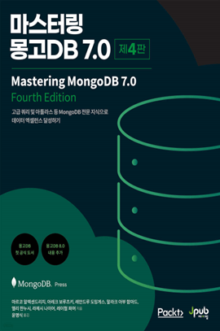

학습 목표
- 1. MongoDB의 아키텍처와 데이터 저장 구조에 대한 기초를 다질 수 있다.
- 2. CRUD, 조건 검색, 집계 파이프라인 등 핵심 기능을 실습을 통해 익힐 수 있다.
- 3. 애플리케이션 연동, 텍스트 검색, 인덱스 활용 등 실무 활용 기술을 확인할 수 있다.
교육 특징
-
1. NoSQL 개념부터 MongoDB 설치, 구조, CRUD, 집계까지! 실무에 바로 쓰는 MongoDB 실습 중심 강의
MongoDB의 기본 구조와 명령어를 기초부터 실습으로 익히며, 데이터 저장, 조건 검색, 집계 파이프라인, 인덱스까지 실무 핵심 기능을 체계적으로 학습할 수 있도록 구성
-
2. 전문 강사의 실무 경험을 바탕으로 구성된 단계별 실습 콘텐츠
MongoDB를 실제 서비스에 적용해 본 강사의 노하우를 바탕으로 CRUD, 검색, 집계, 텍스트 인덱스, 연동 실습까지 학습자가 직접 따라 할 수 있도록 강의
-
3. 애플리케이션 연동부터 Python 크롤링, 컨테이너 활용까지 확장 가능
Python 기반 데이터 수집, 컨테이너 앱과의 연동 등 MongoDB의 실전 활용까지 다뤄 단순 개념이 아닌 실무 데이터 흐름에 MongoDB를 자연스럽게 적용하는 경험 제공
교육 대상
- 1. 기업체 전 임직원
- 2. MongoDB를 처음 접하는 직장인 및 개발자
- 3. NoSQL과 MongoDB 활용이 필요한 실무 개발자
강의 목차
- 제1장 NoSQL 이해
- 제2장 MongoDB 구성
- 제3장 MongoDB 구조와 기본 개념
- 제4장 MongoDB 기본 명령어
- 제5장 MongoDB 데이터 검색
- 제6장 MongoDB, CRUD 활용
- 제7장 MongoDB 집계 프레임워크
- 제8장 Text 검색과 INDEX 활용
- 제9장 MongoDB 모니터링
- 제10장 MongoDB & 애플리케이션
강사 소개
강사명
이현용
경력
서울호서전문학교 오라클데이터베이스과 겸임교수(2010~2015)
삼성멀티캠퍼스 Unix & Linux 보안실무 사외강사(2014~2016)
(유)한국오라클 Oracle 공인강의 외부강사
HBI기술연구소 사외 수석연구원(IT컨설턴트)
데이터스토리허브 대표
Amazon AWS AAI CHAMPION(AWS 공인 강사)
기업 출강 기술 교육 (삼성전자, 롯데, 신한은행, LGcns, 한전KDN, 대검찰청, 국세청 등..다수)
삼성멀티캠퍼스 Unix & Linux 보안실무 사외강사(2014~2016)
(유)한국오라클 Oracle 공인강의 외부강사
HBI기술연구소 사외 수석연구원(IT컨설턴트)
데이터스토리허브 대표
Amazon AWS AAI CHAMPION(AWS 공인 강사)
기업 출강 기술 교육 (삼성전자, 롯데, 신한은행, LGcns, 한전KDN, 대검찰청, 국세청 등..다수)
참고 도서

도서명
마스터링 몽고DB 7.0
저자명
마르코 알렉센드리치 외 7명
도서소개
몽고DB 소속 필진이 참여한 최초의 공식 도서로, 집계 파이프라인, 다중 문서 ACID 트랜잭션 같은
고급 쿼리는 물론, 아틀라스 백터 검색 등 AI 애플리케이션에 유용한 최신 기능까지 소개합니다.